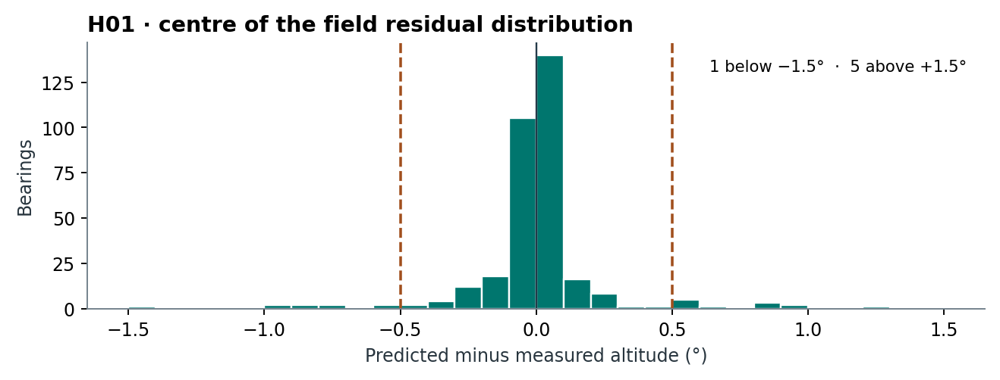

17 Studies by question and package build
A result belongs to the build, inputs and settings that produced it. The tables give the latest verified run for the stated question and sample in these archives. The function chapters describe build 2.0.9004. An older build in the table means that the reported result has not been established here for the newer implementation.
17.1 H01. Horizon altitude at surveyed bearings
Research question. How accurately does createHor() predict the angular altitude of the visible terrain skyline from a DEM at an independently surveyed azimuth?
Outcome. Across 334 distinct bearings at 31 observing setups, the median absolute difference from the field measurement was 0.036°, the mean absolute difference was 0.169°, and 91.9% of predictions fell within ±0.5°. Mean signed error was +0.048° (predicted minus measured). Thus the DEM-derived skyline usually agreed with the observed terrain horizon to within half a degree at these bearings. Individual errors reached 7.26°. The 0.5° figure is an observed proportion for this sample and cannot serve as an uncertainty bound for an individual sightline.

Each residual combines the effects of the terrain model, observer position and height, numerical skyline calculation and field measurement. The surveys sample particular directions at each setup. Accuracy between those directions, including narrow peaks or notches, remains unmeasured. The station and terrain summaries below show how far the pooled result transfers across the tested conditions.
The horizon methods chapter describes the ray geometry, curvature and terrestrial refraction used by the tested build, 2.0.9004. The screened field dataset contains 775 distinct bearings from 36 observing setups in six countries. Digitised measurements from Artegna form an additional comparison.
Field and numerical protocol. Each observation retains the survey, observing position, target description, original table or figure, true azimuth and measured altitude. The analysis counts an exact repeated angular pair once within a setup. Where two distinct altitude readings have the same published bearing at the same setup, their mean contributes one residual. Coordinate provenance distinguishes an instrument fix, an adopted site coordinate and a shared coordinate for nearby setups. The run manifests record any assumed instrument height. No location or height was selected by minimising the field residuals.
For each terrain product, the function traces the horizon at 0.25° azimuth spacing and the specified radial step. The validation script interpolates the numerical profile linearly at the recorded bearing. A sight is eligible at the stated radius when both bracketing rays have finite terrain samples to that distance. A signed residual is the predicted altitude minus the field altitude, in degrees. Positive values place the modelled horizon above the measured one. The pooled summary weights each distinct station–bearing combination equally. Several bearings can describe the same ridge, and the number of bearings per station varies.
Results by terrain selection. The table compares the two tested search distances in Wales and Tenerife under both Irish terrain selections. Other regions keep their original settings. Each 50 km sample is a subset of the corresponding 15 km sample.
| Selection | Bearings | Mean signed error | Mean absolute error | Median absolute error | RMSE | Within ±0.5° |
|---|---|---|---|---|---|---|
| Wales and Tenerife 15 km, working terrain selections | 334 | +0.048° | 0.169° | 0.036° | 0.565° | 91.9% |
| Wales and Tenerife 50 km, working terrain selections | 215 | +0.073° | 0.232° | 0.051° | 0.700° | 88.4% |
| Wales and Tenerife 15 km, SRTM throughout Ireland | 727 | -0.021° | 0.229° | 0.047° | 0.593° | 88.2% |
| Wales and Tenerife 50 km, SRTM throughout Ireland | 608 | -0.026° | 0.263° | 0.054° | 0.647° | 86.2% |
The longer-radius working sample includes 29 setups, compared with 31 at the shorter radius. Extending those two regions to 50 km leaves 28 of the original 126 Welsh bearings and 16 of the original 37 Tenerife bearings with continuous terrain. The archive preserves both editions’ results. In Ireland the 25 m EU-DEM supplies 117 complete bearings at 65 km, while SRTM supplies all 510. On the 117 bearings shared by both products, the mean absolute errors are 0.167° for EU-DEM and 0.120° for SRTM. The wider SRTM result changes both the terrain input and the distribution of sampled directions.
Station and range effects. West Kennet gives a mean absolute error of 0.032° over 12 bearings. Rectory Farm S2 gives 0.823° over 11 bearings with the same 1 m Environment Agency terrain product and 5 km radius. Several discrepant Rectory Farm profiles reach their apparent maximum only 245–289 m from the instrument. The 15 and 50 km Welsh runs have 28 common bearings. Each prediction changes by less than 0.001°. In Tenerife, 16 bearings have complete terrain samples at both 15 and 50 km. Each changes by less than 0.001°. At Chaco the four setups give identical predictions at 25 and 50 km. At the Argentine stations a 30 to 70 km extension changes one prediction by 4.24°, while extension from 70 to 120 km changes predictions by at most 0.00073°. Those Argentine runs use a 30 m surface model and are reported separately.
Interpretation and outstanding checks. Welsh results depend on complete native LiDAR coverage along the extended sightlines. Coastal gaps preclude native-resolution scoring at the two Maltese setups and along the Maeshowe sightlines under this rule. The report identifies the coarser product used at those stations. Tenerife retains the authors’ GPS locations and their refraction-corrected altitudes. A finer Spanish ground model is published regionally, but numerical tiles must be verified along the survey bearings before those statistics can be assigned to that resolution. At La Nariz the paper’s sanctuary coordinate and Murcia’s officially designated centre are 21.64 km apart. The predictions at both positions remain diagnostic. The test describes field agreement for these sites, inputs and settings. H02 compares the computed skylines. Spanish terrain product status · Murcia site designation
Records and reproduction. The report gives the signed residual distribution, error statistics and histograms for the pooled sample, each DEM source and resolution, and each observing setup. The archive contains the original row locators, coverage decisions, per-bearing predictions, R code, download recipes and terrain checksums. Detailed H01 validation report · Download the H01 study and code
Field sources include Wilson’s horizon surveys, Humble’s Rectory Farm tables, Reijs’s Orkney survey, Esteban and Delgado Cabrera’s Tenerife measurements, Ocharan Ibarra and Esteban’s La Nariz tables, Lomsdalen’s Maltese total-station readings, Munro’s Chaco field sheets, and Leibowicz and colleagues’ Cachi survey. The image-derived Italian comparison uses Patat’s Figure 3.
17.2 H02. How well does createHor() reproduce terrain skylines?
Research question. How closely does createHor() reproduce a skyline calculated independently from the same terrain, and how accurately does it predict horizon altitude at surveyed bearings?
Outcome. On the same 1 m terrain, createHor() reproduced Horizon’s skylines with a mean absolute difference of 0.004° at each of the two English control sites. On the covered directions at 30 Maltese viewpoints, its mean absolute difference from Horizon was 0.062°.
Against field measurements, createHor() using SRTM had a mean absolute error of 0.328° across 344 bearings at eight Irish setups, lower than either HeyWhatsThat or PeakFinder on those bearings. Its accuracy varied by site. Using the same 1 m terrain product in England, createHor() had a mean absolute error of 0.032° at West Kennet and 0.823° at Rectory Farm. It was closest to the observations at West Kennet. Both online services were closer at Rectory Farm.
The Maltese figure covers 20,059 directions with continuous 5 km terrain coverage. Xemxija is held out because its archived viewpoint is disputed. At Kunċizzjoni, the Horizon comparison uses the archived Horizon position for both programs. Only predictions made at the field position enter the field comparison. The Irish service comparison uses each provider’s delivered profile and terrain. H02 comparison report · Data and code archive
17.3 Ephemeris accuracy and lunar skyline crossings
A02 reports the geocentric, local sky and lunar crossing comparisons for build 2.0.9004, with both reproducible archives.
17.4 Validation programme
Status refers to the agreed protocol for this programme. Earlier studies and worked examples remain available for several planned checks. Each completed ID links to the result for its tested build.
| ID | Question or quantity | Functions in scope | Status |
|---|---|---|---|
| H01 | How closely do DEM skylines agree with field theodolite readings? | createHor(), hor2alt() |
Complete |
| H02 | How does createHor() compare with other skyline methods and field bearings? | createHor(), createHWT(), importPeakFinder() |
Complete |
| H03 | DEM ray tracing, curvature and convergence | createHor(), hor2alt() |
Planned |
| H04 | Reconstructed earthworks and synthetic panoramas | horFeature(), createHor(), demPalettes(), plot.skyscapeR.horizon() |
Planned |
| H05 | Calibrating a photographic horizon | importPanorama(), hor2alt(), createHor() |
Planned |
| H06 | Horizon providers, PNGs and Stellarium landscapes | createHWT(), downloadHWT(), importPeakFinder(), importPanorama(), exportHor(), exportStellarium(), exportPanorama(), relinkHor(), plot.skyscapeR.horizon() |
Planned |
| H07 | Passing incomplete horizons between functions | importPanorama(), hor2alt(), coordtrans(), riseset(), star.phases(), spatial.equinox(), exportHor() |
Planned |
| F01 | Compass and solar-sight reduction | mag.dec(), reduct.compass(), reduct.theodolite(), sunAz(), ten(), az2dec() |
Planned |
| A01 | Calendar, clock, angle and session conventions | BC.AD(), astroYear(), time2jd(), jd2time(), timestring(), long.date(), ten(), skyscapeR.vars() |
Complete |
| A02 | How closely do planetary positions and lunar skyline bearings agree with their JPL references? Includes a crossing sensitivity study relevant to riseset(). | body.position(), moonphase() |
Complete |
| A03 | Stellar propagation and reference frames | star(), body.position(), obliquity(), parallax.corr(), orbit() |
Planned |
| A04 | Crossings on flat and irregular skylines | riseset(), orbit(), body.position(), hor2alt(), star.phases() |
Planned |
| A05 | Solar dates and limiting declinations | solar.date(), eq(), jS(), dS(), zenith(), antizenith(), obliquity(), parallax.corr(), spatial.equinox(), hor2max.dec(), hor2min.dec(), az2dec() |
Planned |
| A06 | Moon, planets and extrema across an epoch | moonphase(), nMjLX(), nmnLX(), sMjLX(), smnLX(), planet.extremes(), body.position(), skyObject() |
Planned |
| A07 | Equinoctial full Moons and crescent crossovers | EFM(), CC(), moonphase(), riseset(), body.position() |
Planned |
| A08 | Target screening, dated bands and returned tracks | findTargets(), skyObject(), sky.objects(), star(), solar.date(), hor2max.dec(), hor2min.dec(), orbit() |
Planned |
| V01 | Stellar phases and dated visibility | star.phases(), star(), riseset(), sketchSky(), skyRadiance(), plot.skyscapeR.starphases() |
Planned |
| V02 | Milky Way outer boundary and internal structure | sketchSky(), skyRadiance(), planisphere() |
Planned |
| V03 | Twilight gradients and moonlight | sketchSky(), skyRadiance(), body.position() |
Planned |
| V04 | Flux, cluster glow and the Pleiades | sketchSky(), skyRadiance(), skyStep() |
Planned |
| V05 | Atmospheric extinction by altitude | sketchSky(), skyRadiance(), star.phases(), skyscapeR.vars() |
Planned |
| V06 | Planisphere, sky cultures and constellation geometry | planisphere(), importConstellations(), sketchSky(), star() |
Planned |
| V07 | Sky state, Stellarium capture and time stepping | stellariumSky(), sketchSky(), skyStep(), skyscapeR.vars(), plot.skyscapeR.horizon(), time2jd() |
Planned |
| D01 | Measurement PDFs, circular support and highest-density regions | az.pdf(), dec.pdf(), hpdi(), spd(), subset.skyscapeR.pdf() |
Complete; corrected and verified on 2.0.9006 |
| D02 | Azimuth-to-declination propagation | az2dec(), coordtrans(), hor2alt(), az.pdf(), dec.pdf(), spd(), hpdi() |
Planned |
| S01 | Uniform-orientation null model | randomTest(), coordtrans(), az.pdf(), spd(), pval2stars() |
Planned |
| S02 | Specified and site-specific nulls | modelTest(), dec.pdf(), az.pdf(), spd(), coordtrans() |
Planned |
| S03 | Shared scoring, local clusters and analytic probability helpers | randomTest(), modelTest(), bernoulli.trial(), pval2stars(), print.skyscapeR.sigTest(), plot.skyscapeR.sigTest() |
Complete; corrected and verified on 2.0.9006 |
| W01 | Graphical outputs encode the underlying data | plotAzimuth(), plotBars(), plot.skyscapeR.horizon(), plot.skyscapeR.pdf(), plot.skyscapeR.spd(), plot.skyscapeR.sigTest(), plot.skyscapeR.starphases(), print.skyscapeR.sigTest() |
Planned |
| W02 | End-to-end field-to-sky and group workflows | reduct.compass(), reduct.theodolite(), createHor(), hor2alt(), az2dec(), az.pdf(), coordtrans(), spd(), randomTest(), modelTest(), findTargets(), skyObject(), star.phases(), riseset(), sketchSky() |
Planned |
17.5 Lunar event selection
The historical crossover comparison checks annual selections against the Silva & Pimenta (2012) simulation workbooks. It reports moonset pairing changes, SIM1 residuals and the separate unresolved 40° N series. The new worked examples use 2.0.9004 and do not replace the archived runs.
17.6 Sky rendering
A plausible image can conceal errors in its outline, brightness or response to altitude. Each row concerns one quantity. A change to the outline can require repeating one study while leaving a recorded twilight comparison relevant.
| Question | Evidence, tested implementation and scope |
|---|---|
| Milky Way shape. Where are the outer boundary and internal lanes? | The 2.0 development archive retains the diffuse-light source map, candidate thresholds, traced boundaries and bright and dark masks. These document how the depiction was derived and how sensitive its shape was to the tracing choices. The later photometric field comparisons concern brightness in selected patches. They do not independently establish the position of an outer edge. For alignment work the outer outline includes the enclosed dark regions. If a later release revises the anticentre outline, its boundary comparison needs a new run. |
| Twilight. Does the sky brighten by the observed amount in different directions? | In 2.0.9003 the study compared the calibrated curve with Koomen’s Maryland observations held outside the fit. Across 22 directions/solar-altitude combinations the mean absolute difference, expressed in magnitudes, was 0.48 for the revised curve and 2.28 for the earlier curve on the same observations. This checks the observed configurations at solar altitudes −3° and −6°. |
| Flux. Does a point source retain its integrated light when the field of view changes? | The 2.0.9004 release check recovered the modelled Sirius flux at 90°, 45° and 5° field widths (reported ratio 1 at each width). Additional checks compare Sirius, the cluster and a Carina field. Recovery of the input flux verifies the calculation. It does not by itself calibrate the absolute brightness of the night sky. |
| Extinction. Does the Milky Way dim by the specified altitude-dependent factor? | The 2.0.9002 test compared the same skies with the band extinction coefficient set to 0 and 0.2. The script checked the band radiance against the expected multiplier. Model transmission at 0.2 was 0.149 at 5° altitude and 0.832 at 90°. This verifies application of the extinction law. It is not a set of atmospheric transmission measurements. |
Download the five archived sky-rendering scripts for twilight, colour, zoom and shared lighting.
The heliacal-rising comparison draws on the rendering model for a separate question about the timing of an event.
17.7 Study records
Download the sky-check outputs and code. The H01 report and reproducible field archive are linked in the H01 section above.
17.8 When a test changes the package
| What changed? | How the manual reports it |
|---|---|
| Implementation changes, but the question, data, settings and metric stay the same | Add a run to the same study. Show the latest tested build first, with the old and new values, the reason for the code change, and links to both records. Until a rerun exists, identify the last build actually tested. |
| A new station, dataset, phenomenon or accuracy claim is introduced | Add a linked study alongside the existing one. If extending a cohort, retain results for the original common sample and give the expanded sample its own denominator. |
| An error in the reference data, selection or scoring invalidates a result | Mark the affected result as superseded and explain why. Put the corrected result in the main text. Retain the original record and the correction together in the history. |
| A discrepancy was used to tune the model | Label the repeated comparison as calibration or a regression check. Report an independent validation separately when observations unused in tuning are available. |
Each study should have a stable link. Each run should identify the exact source revision or package archive checksum, the data and protocol versions, settings, metric, sample and dated outputs. The main text carries the conclusion a reader can use for the documented release. Earlier runs remain accessible in that study’s history.
17.9 Worked checks for the final methods chapters
Calendar and position calculations, synthetic instrument reductions and the known photographic skyline have reproducible worked examples for 2.0.9004. A02 now provides independent planetary and lunar position comparisons. Stellar reference-frame checks, a surveyed baseline and photographic check bearings remain outstanding.